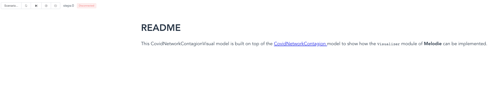

CovidContagionVisual
To show how the Visualizer and MelodieStudio modules can be used,
we provide two model examples:
CovidNetworkContagionVisual and
CovidGridContagionVisual.
They are both build on top of the CovidContagion model,
only with the visualizer added.
So, if you haven’t, we will strongly suggest to read the Tutorial section first.
Visualizer
To visualizer the simulation results, Melodie provides the module visualizer,
which is optional when constructing the simulator.
1from Melodie import Simulator
2from config import config
3from source.data_loader import CovidDataLoader
4from source.model import CovidModel
5from source.scenario import CovidScenario
6from source.visualizer import CovidVisualizer
7
8
9if __name__ == "__main__":
10 simulator = Simulator(
11 config=config,
12 model_cls=CovidModel,
13 scenario_cls=CovidScenario,
14 data_loader_cls=CovidDataLoader,
15 visualizer_cls=CovidVisualizer
16 )
17 # simulator.run()
18 simulator.run_visual()
As shown in Line 15, the CovidVisualizer is included to construct the simulator without any other changes.
You can still run the model as before, just by running the simulator.run function.
But, you can also run the simulator.run_visual to visualize the simulation results in your browser.
You will see how to play with it in a minute.
MelodieStudio
MelodieStudio is another package developed in parallel with Melodie,
which interacts with the Melodie.Visualizer module and visualizes the simulation results in the browser.
You can install it by running pip install MelodieStudio in the command line.
How to start?
Taking the CovidNetworkContagionVisual model as example, you can start the visualization by following the steps as below:
First, run python -m MelodieStudio in your command line (in “Terminal” if you are using PyCharm).
Second, click the first blue link, then in your browser, you will see:
Third, as shown, the front-end is started and you can see the readme.md file of the model.
But, the front-end is still “disconnected” with the back-end.
Now, you go back to the code editor and run the simulator.run_visual function.
Then, you will see the frond- and back-ends are connected:
Fourth, now, go back to the browser and click the “right triangle”, you will see the simulation results.
You can also stop the model or run in steps.
Besides, you can revise the infection_prob parameter,
then “reset”, then start the model again.
The contagion process will be different.
The code that produces the figures are all written in the visualizer.py file as below.
1from typing import TYPE_CHECKING
2from Melodie import FloatParam, Visualizer
3
4if TYPE_CHECKING:
5 from source.model import CovidModel
6
7
8class CovidVisualizer(Visualizer):
9 model: "CovidModel"
10
11 def setup(self):
12
13 self.params_manager.add_param(FloatParam(
14 name='infection_prob',
15 value_range=(0, 1),
16 label="Infection Probability (%)"
17 ))
18
19 self.plot_charts.add_line_chart("infection_count_line").set_data_source({
20 "not_infected": lambda: self.model.environment.s0,
21 "infected": lambda: self.model.environment.s1,
22 "recovered": lambda: self.model.environment.s2,
23 "dead": lambda: self.model.environment.s3
24 })
25
26 self.plot_charts.add_barchart('infection_count_bar').set_data_source({
27 "not_infected": lambda: self.model.environment.s0,
28 "infected": lambda: self.model.environment.s1,
29 "recovered": lambda: self.model.environment.s2,
30 "dead": lambda: self.model.environment.s3
31 })
32
33 self.add_network(name='covid_contagion_network',
34 lambda: self.model.network,
35 var_getter=lambda agent: agent.health_state,
36 var_style={
37 0: {
38 "label": "not_infected",
39 "color": "#00fb34"
40 },
41 1: {
42 "label": "infected",
43 "color": "#fafb56"
44 },
45 2: {
46 "label": "recovered",
47 "color": "#3434b8"
48 },
49 3: {
50 "label": "dead",
51 "color": "#999999"
52 }
53 })
By following same steps, you will also see the visualization of the CovidGridContagionVisual model: